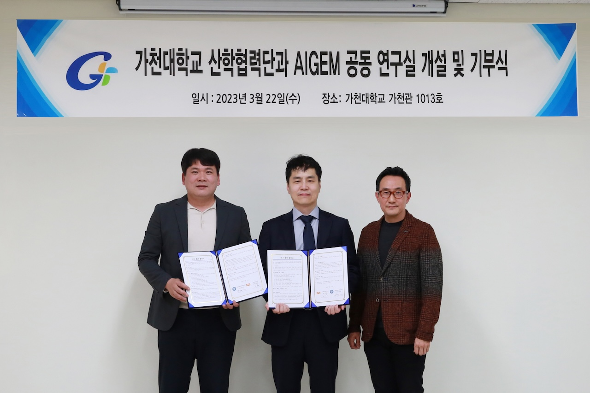

(주)에이아이젬 공동 연구실 개설 및 기부식

가천대학교 산학협력단(단장 송윤재)과 가천대 기술지주회사의 자회사인 의료기기 및 헬스케어 서비스 전문기업 ㈜에이아이젬(AIGEM·대표 이영구)이 공동연구실 개설식 및 기부식을 22일 대학 가천관 회의실에서 개최했다.
양 기관은 이날 협약을 통해 교내에 공동연구실을 설치하고 컴퓨터공학과 황희정 교수가 연구를 총괄, AI기반 스마트 의료용 베드 개발에 힘쓰기로 했다.
에이아이젬은 이날 주식 30만주(3천만원 상당)를 가천대 산학협력단에 기부했으며 그 동안 기부한 총 주식은 70만주(7천만원 상당)이다.